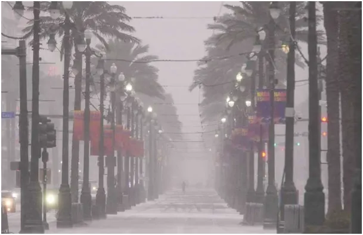
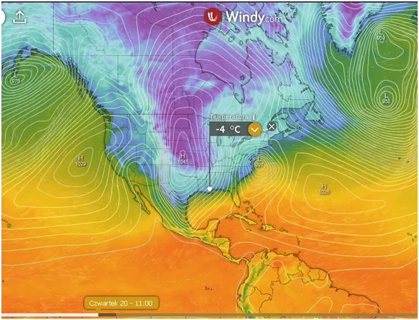
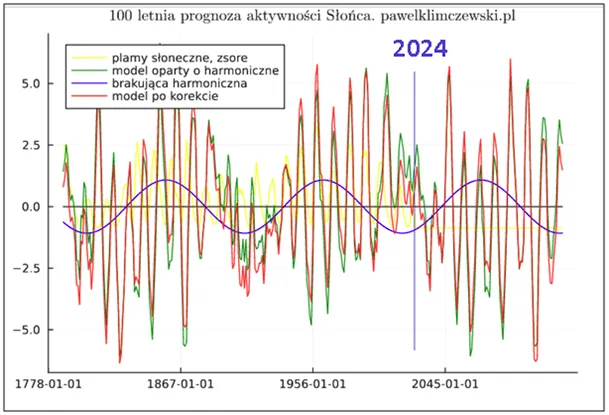

IDZIEMY Z ROZUMEM I NAUKĄ DO SEJMU!
Wiemy już, że USA wycofały się z agendy klimatycznej i wielu innych lewicowych absurdów i zrobiły to w idealnym momencie. Do Nowego Orleanu, miasta nad Zatoką Amerykańską (dawniej Meksykańską) nadciąga kolejna, zimowa fala. Klimat tego miejsca jest zdefiniowany jako wilgotny, subtropikalny, gdzie średnie, najniższe temperatury zimowe to 9 st. C.

Kolejna fala mrozów ściągnie śnieżyce, tym razem na wschodnim wybrzeżu, w Wirginii, gdzie wszyscy już czekają na wiosnę. Mróz ma też dotrzeć do wybrzeża w północnej Kalifornii, nad Pacyfikiem. Pożegnanie z "globalnym ociepleniem" odbywa się w adekwatnej scenerii.

Przez najbliższe lata będziemy śledzić postępy zimy, które są skutkiem relacji w wymianie energii między Słońcem a Ziemią. Nie mamy innego źródła ciepła niż Słońce, a zbawienny efekt cieplarniany, powodowany głównie (ponad 90% udziałów) przez parę wodną (H2O) daje nam możliwość życia na naszej planecie. Słońce za pośrednictwem jonosfery w dość złożonym kosmicznym procesie zmienia warunki wymiany energii na Ziemi i prognozy na najbliższe dekady, które nie są optymistyczne. Opisałem to dokładnie ponad rok temu w tekście "Kosmiczna prognoza do 2045. Globalne oziębienie!" https://pawelklimczewski.pl/2024/02/03/kosmiczna-prognoza-do-2045-globalne-oziebienie/.

Jest tam też opis powszechnie lekceważonego długiego, trochę ponad 100-letniego cyklu aktywności Słońca, który tłumaczy ciężkie zimy Epoki Napoleońskiej i 20-lecia w XX wieku. Fakty te oraz wiele innych, fałszywych "mądrości klimatycznych" będę miał przyjemność wyjaśnić w polskim Sejmie, na konferencji, której jestem współsprawcą.
Konferencja dotyczy "Głębokiego resetu" kultury i polityki prowadzonego od dekad w skali globalnej. Agenda klimatyczna jest jednym z jej filarów, dlatego wymaga rozbrojenia. Osoby zainteresowane uczestnictwem proszę o kontakt na priv. lub mailem pawel@pawelklimczewski.pl
Jest to przełomowe wydarzenie, po którym żaden z polityków już nie będzie mógł powiedzieć: "...a ja nie wiedziałem".
Paweł Klimczewski